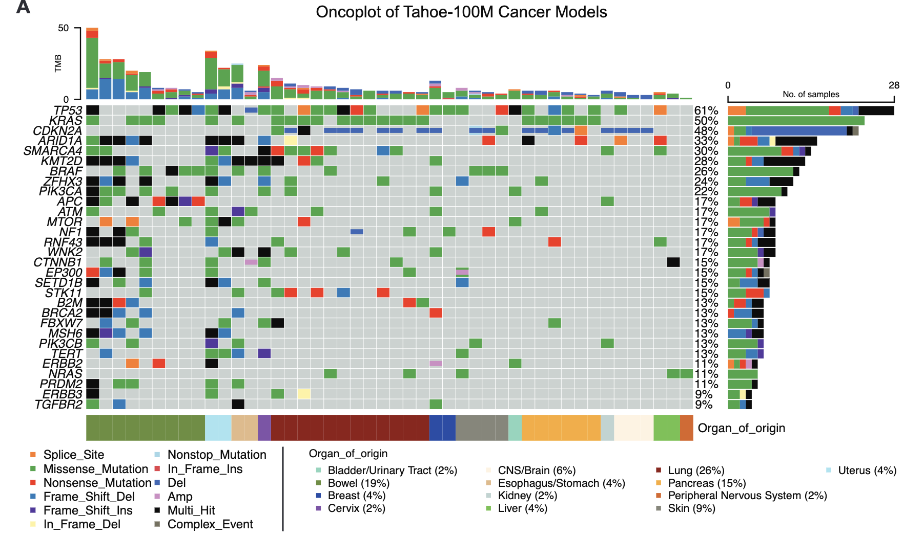
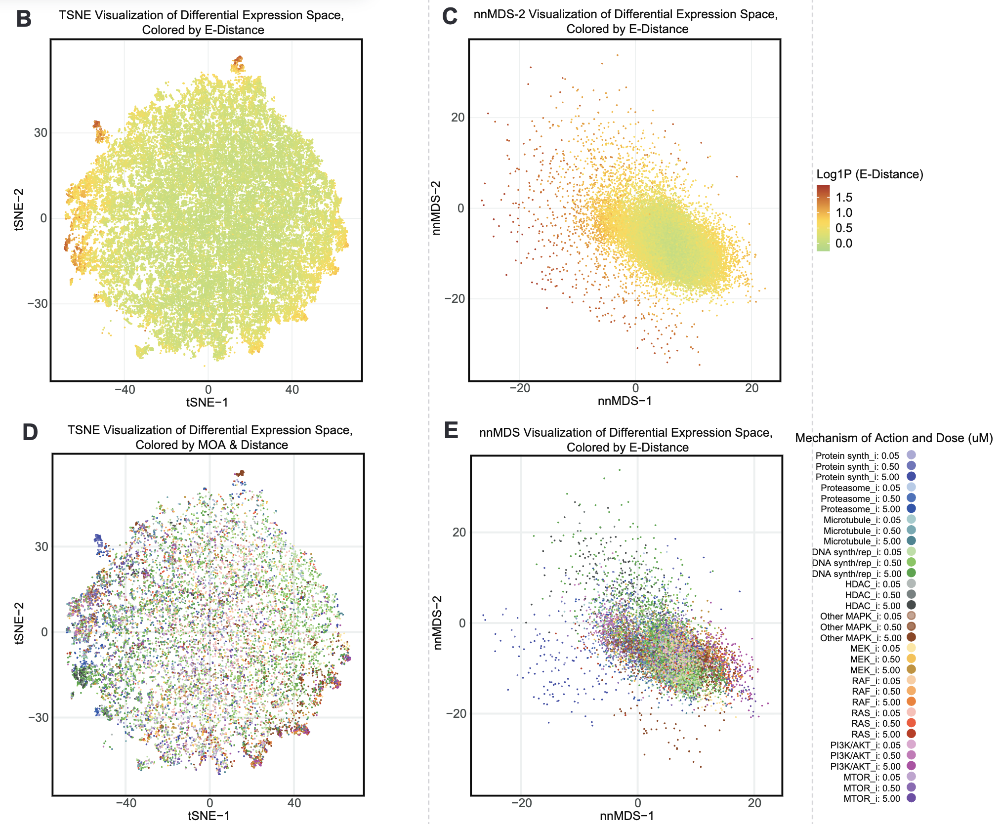

Tahoe-100M
- small-molecule perturbation에 노출된 50가지 암세포주로부터 얻은 1억 개 이상의 transcriptomic profile로 구성된 단일 세포 perturbation atlas
- 주로 암세포주를 기반
- Mosaic platform 을 사용함.
- 세포주 혼합 및 spheroid 배양: 약 50가지 cancer cell line으로 구성된 'cell village' 를 suspension 상태의 spheroid 형태로 배양
- 약물 처리: 각 spheroid에 다양한 small-molecule 약물 perturbation(약물 및 DMSO vehicle control 포함)을 24시간 동안 적용
- SNP-based deconvolution
- 각 단일 세포의 scRNA-seq 라이브러리에서 발견되는 genetic variant (SNP)를 활용하여 해당 세포가 어떤 세포주에서 유래했는지(cell line of origin)를 정확히 할당하는 과정
- dbSNP에서 exonic 및 untranslated region (UTR) variant 중 gnomAD allele frequency가 0.1보다 큰 SNP만을 필터링하여 curated reference set을 구축 → genotype calling
- 각 단일 세포의 scRNA-seq 라이브러리에서 발견되는 genetic variant (SNP)를 활용하여 해당 세포가 어떤 세포주에서 유래했는지(cell line of origin)를 정확히 할당하는 과정

- 약물 유도 전사체 효과
- E-distance (Peidli et al. 2024)
- 약물 농도가 높을수록 E-distance가 커지는 경향을 보였으며
- 단백질 합성 억제제(ex: harringtonine, homoharringtonine)와 CDK inhibitor (ex: dinaciclib) 등이 특히 큰 효과를 나타냄.
- Proteasome inhibitor, HDAC inhibitor, PI3K/AKT inhibitor 등 다양한 항암제 MOA에서 높은 E-distance가 관찰
- 세포주-약물-농도 조합을 단일 데이터 포인트로 간주하여 differential gene-set score를 계산하고, 이를 tSNE 및 nnMDS로 시각화
